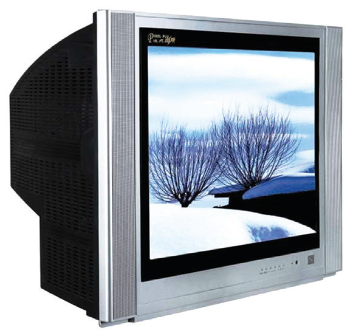
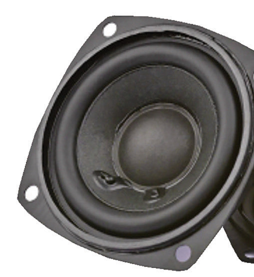
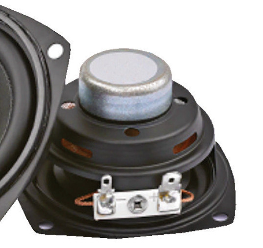
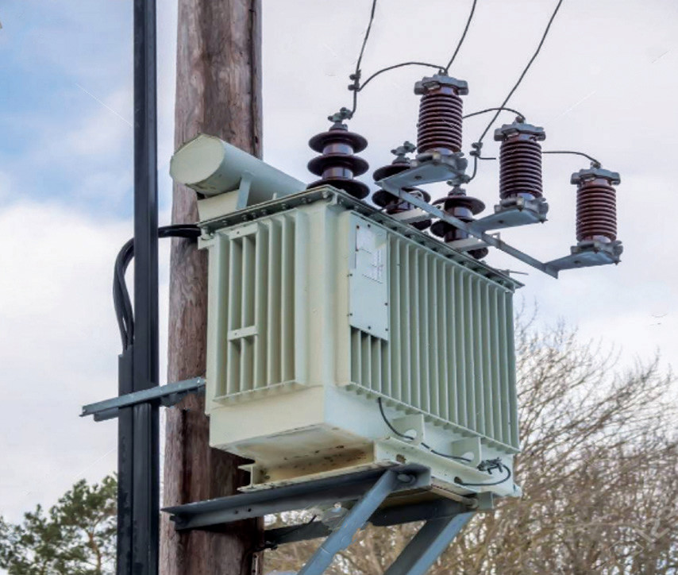
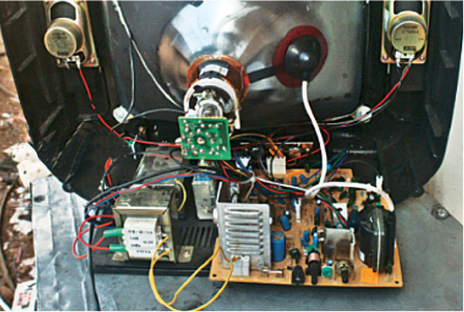

3. CRT (Cathode Ray Tube) television and computer monitors
These employ an electromagnet in their inputs to assist in producing an image on the screen (see Figure 3.13).

4. Speakers and microphones
These use permanent magnets and current-carrying coils to convert electric energy into sound and sound energy into electrical energy, respectively. For example, hi-fi stereo speakers (see Figure 3.14) have very powerful magnets to produce high-quality sound and sufficient volume.


5. Electric generators
These use permanent magnets to convert mechanical energy to electrical energy.
6. Transformers
These are used in power transmission and many electronic devices, as shown in Figure 3.15 (a) and (b).


Transformers are used in electronic devices to reduce the standard 240 V AC mains voltage to lower levels suitable for operating equipment such as radios, high fidelity hi-fi systems, computers, televisions, and doorbells.
7. Electromagnets. These are used in hospitals when dealing with eye injuries caused by iron or steel splinters. They are also used in Magnetic Resonance Imaging (MRI) to diagnose brain tumours, haemorrhage, nerve injury and stroke injury. Electromagnets are also applicable in steelworks and cranes.